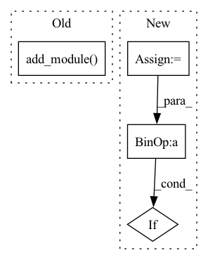

Pattern ID :2895
Before Change
self.layers = nn.Sequential()
for index, output_size in enumerate(output_sizes):
// self.layers.add_module("linear_%d" % index, LazyLinear(output_size))
self.layers.add_module( "linear_%d" % index, nn.LazyLinear(output_size))
// self.layers.add_module("relu", nn.ReLU6())
def forward(self, input):
input = input.to(device)After Change
class LazyMLP(nn.Module):
def __init__(self, output_sizes):
super().__init__()
num_layers = len(output_sizes)
self._layers_ordered_dict = OrderedDict()
for index, output_size in enumerate(output_sizes):
self._layers_ordered_dict["linear_" + str(index)] = nn.LazyLinear(output_size)
// self.layers.add_module("linear_%d" % index, LazyLinear(output_size))
if index < (num_layers - 1):
self._layers_ordered_dict["relu_" + str(index)] = nn.ReLU()
self.layers = nn.Sequential(self._layers_ordered_dict)
In pattern: SUPERPATTERN
Frequency: 3
Non-data size: 4
Instances Fragment ID: 11340988
Project Name: wwmark/meshgraphnets
Commit Name: 9be9ef87016e6502ff5ef60a988866e0d7fc9ecb
Time: 2021-10-08
Author: ruoheng.ma@gmail.com
File Name: encode_process_decode.py
M Class Name: LazyMLP
N Class Name: LazyMLP
M Method Name: __init__(2)
N Method Name: __init__(2)
M Parent Class: nn.Module
N Parent Class: nn.Module
M File Name: encode_process_decode.py
N File Name: encode_process_decode.py
M Start Line: 36
M End Line: 42
N Start Line: 36
N End Line: 43
Before Change
if new_module is not None:
changed = True
module.add_module( name, new_module)
// recursively apply to child
changed |= patch_dropout_layers(child)
return changedAfter Change
if not inplace:
module = deepcopy(module)
changed = _patch_dropout(module=module, prob=prob, consistent=consistent, **consistent_kwargs)
if not changed :
raise MisconfigurationException("The model should contain at least one dropout layer.")
return module
Fragment ID: 11341001
Project Name: pietrolesci/energizer
Commit Name: 280d4ae9cedfd0fa1ca2c52437963e8887e658cc
Time: 2021-12-31
Author: pietrolesci@outlook.com
File Name: energizer/inference/utils.py
M Class Name: AnonimousClass
N Class Name: AnonimousClass
M Method Name: patch_dropout_layers(4)
N Method Name: patch_dropout_layers(3)
M Parent Class:
N Parent Class:
M File Name: energizer/inference/utils.py
N File Name: energizer/inference/utils.py
M Start Line: 155
M End Line: 195
N Start Line: 179
N End Line: 208
Before Change
self.layers = nn.Sequential()
for index, output_size in enumerate(output_sizes):
// self.layers.add_module("linear_%d" % index, LazyLinear(output_size))
self.layers.add_module( "linear_%d" % index, nn.LazyLinear(output_size))
// self.layers.add_module("relu", nn.ReLU6())
def forward(self, input):
input = input.to(device)After Change
class LazyMLP(nn.Module):
def __init__(self, output_sizes):
super().__init__()
num_layers = len(output_sizes)
self._layers_ordered_dict = OrderedDict()
for index, output_size in enumerate(output_sizes):
self._layers_ordered_dict["linear_" + str(index)] = nn.LazyLinear(output_size)
// self.layers.add_module("linear_%d" % index, LazyLinear(output_size))
if index < (num_layers - 1):
self._layers_ordered_dict["relu_" + str(index)] = nn.ReLU()
self.layers = nn.Sequential(self._layers_ordered_dict)
Fragment ID: 11340995
Project Name: wwmark/meshgraphnets
Commit Name: 230815cb6b38dd30b8d25bec0083efb8358d68e2
Time: 2021-10-08
Author: ruoheng.ma@gmail.com
File Name: encode_process_decode_max_pooling.py
M Class Name: LazyMLP
N Class Name: LazyMLP
M Method Name: __init__(2)
N Method Name: __init__(2)
M Parent Class: nn.Module
N Parent Class: nn.Module
M File Name: encode_process_decode_max_pooling.py
N File Name: encode_process_decode_max_pooling.py
M Start Line: 36
M End Line: 42
N Start Line: 36
N End Line: 43